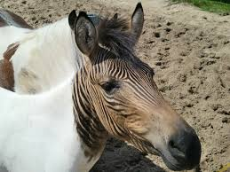

This is a photo of a HEBRAAA

A zebroid is the offspring of any cross between a zebra and any other equine to create a hybrid. In most cases, the sire is a zebra stallion. The offspring of a donkey sire and zebra dam, called a donkra, and the offspring of a horse sire and a zebra dam, called a hebra, do exist, but are rare and are usually sterile. Zebroids have been bred since the 19th century. Charles Darwin noted several zebra hybrids in his works.[1]